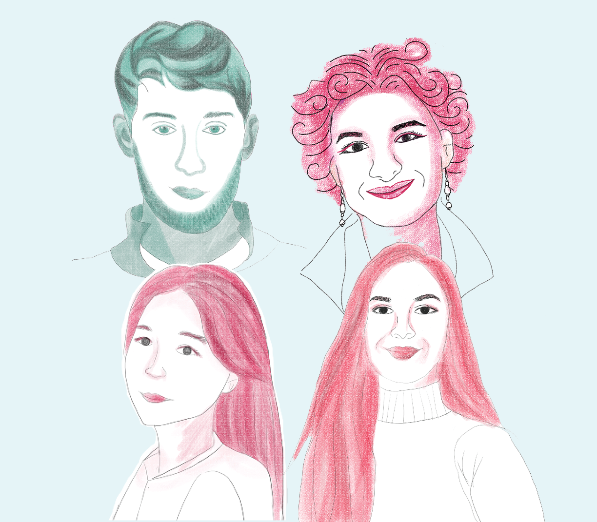

Writing
At Northeastern, I've written for The Huntington News, the Mission Hill Gazette, Storybench and The Foreign Observer Magazine on topics such as:
- Boston Synagogue weighs security questions post-Pittsburgh
- These Schools in Franklin are Confronting Bias Incidents with Conversations
- Shattuck Award winner dishes nutrition advice at Tobin
- Getting an H1B - An International Student’s Journey to Work in the U.S
- Perspective from an Emergency Responder at US – Mexico Border
Data Viz

A neighborhood finder that pick out the most suitable Boston neighborhood for you based on your three priorities
A quiz testing your knowledge of the H-1B visa, the most popular working visa for international students in the U.S.

I coded this scrollytelling piece by analyzing data from the City of Boston and Twitter API. Python was used to retrieve tweets from Twitter, D3.js library to create the interactive charts and Tableau for the map, alongside HTML and CSS.

This story is one in a 4-part series by the Boston Globe highlighting unique angles of the gig economy in Boston.

3D space created with D3 library THREE.js.
Editing
I founded the Foreign Observer magazine in 2019 while at Northeastern University. It is the only student magazine on campus that focuses on issues that affect and interest the international student community in the U.S. The magazine is advised by Matt Carroll, professor of Practice at Northeastern University.
Design
A sample magazine design for the Margins, a Northeastern University's Media Innovation program magazine
Podcast

A mini-podcast done prior to the 2018 mid-term election using Adobe's Audition.
Video

A video about No Jokes, a student-led improv club at Northeastern University, created using Adobe's Premier.